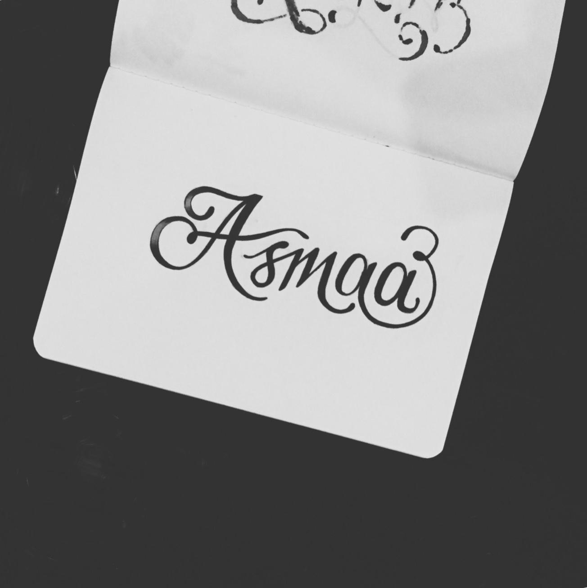

Objectives
With a Computer Science bachelor's degree in view and a full-stack Development student,this inquisitive and organized
person is aiming to gain the best and adequate knowledge to attain a great height in the field of computing and software development.
Education
- Imam Dar Al-Hijrah(2007-2010)
- Wamy International School(2010-2013)
- Fitrah children School(2013-2014)
- Inaayatullah International Academy(2014-2015)
- Lamp bearers Islamic school(2015-2020)
- University of Ilorin(2021-present)
Work experience
- Teaching at Al-Haneef College(September 2022-December 2022)
- Administrative officer at Ibaadur Rahman center for quran memorization(2022-present)
Skills
- Graphic designing
- Baking
- Web Development
Achievements
- President of JETS club
- Best graduating Student in High School
- Senior prefect(High School)
- General Secretary, LABIS Alumni
Hobbies
Contact